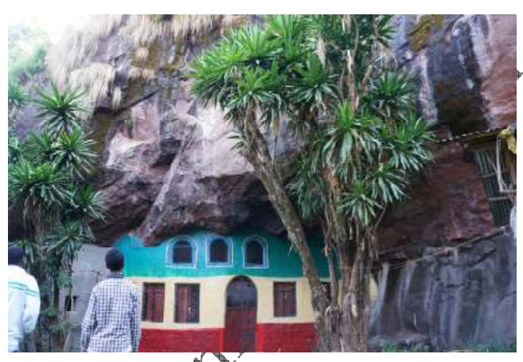
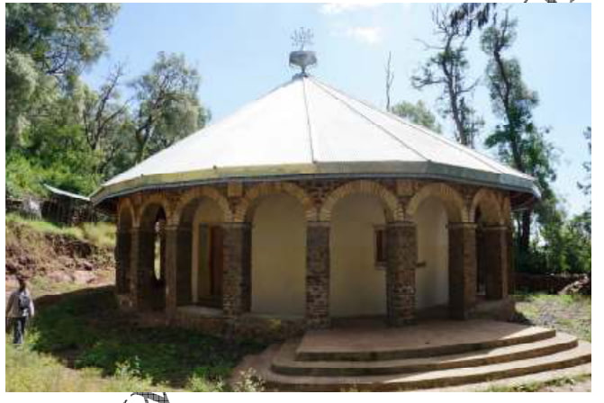
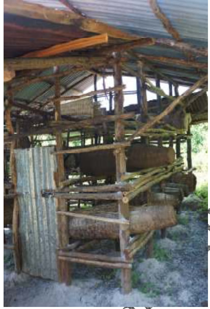

As an aspiring IT professional and student, I am not just learning to code; I am dedicated to proudly preserving the history, beautiful culture, and heritage of my community, and introducing them to the world through the power of technology.


የጣራ ገዳም አካባቢ ታሪክ እንደሚነግረን ከሆነ ደግሞ ትውልዷ እዚህ ነው፡፡ እናቷ እንኮየ ትባላለች፡፡ ከቋራ ዘመን አልፎባት የተሰደደች እናት ነበረች፡፡ ትኖር የነበረበትን ቦታ አሁን ‹ወይዘሮ መሬት› እየተባለ ይጠራል፡፡ ‹ወይዘሮ› በድሮ ዘመን ከነገሥታትና መኳንንት ለሚወለዱ ሴቶች ብቻ ይሰጥ የነበረ መዓርግ ነው፡፡ እንኮየ ምንትዋብን ወልዳ ለዐቅመ ሔዋን እንዳደረሰች በወቅቱ የገዳሙ አበ ምኔት የነበሩት ዓይነ ሥውሩ አባት አቡነ ኤርምያስ ‹‹እርሷ ትልቅ ዕድል አላትና ይዘሻት ጎንደር ሂጂ›› አሏት፡፡ እርሷም ሄደች፡፡ የቤተ መንግሥት ሰዎች አላስገባ ብለዋት ብዙ ጊዜ በደጅ ጥናት ቆየች፡፡ በኋላ ግን በአንዳንድ ሰዎች አማካኝነት ትገባለች፡፡ የደረሰባትንም ችግር ታመለክታለች፡፡ ንጉሡም ችግሯን አዩላት፡፡ አብራ የወሰደቻትን ምንትዋብንም ወደዷትና አገቧት፡፡ ምንትዋብም የዐፄ በካፋ ባለቤት ሆና ቤተ መንግሥት ገባች፡፡ ጎንደር ‹እንኮየ በር› እና ‹እንኮየ መስክ› የሚባል ቦታ አለ፡፡ ምናልባት ከምንትዋብ እናት ከእንኮየ ጋር ይገናኝ ይሆን? ጥናት ይፈልጋል፡፡

በንብ ርባታ፣ በእርሻና በከብት ርባታ ራሳቸውን ችለው ገዳማዊ ሕይወታቸውን መቀጠል የሚፈልጉት ገዳማውያኑ ዋናው ችግራቸው ውኃ ነው፡፡ ‹‹ውኃ ብናገኝ ከራሳችን አልፈን ለሌሎች በተረፍን ነበር፡፡ እኛ የዕለት ርዳታ አንፈልግም፡፡ እጅ እግር አለን፡፡ ዕውቀቱም አለን፡፡ ያጣነው ውኃ ነው፡፡ ውኃ ካገኘን ይህንን መሬት እናስገብረዋለን፡፡›› ብለውኛል አበ ምኔቱ፡፡ በአካባቢው ውኃ የሚገኘው ከተራራው ሥር ተቆፍሮ ነው፡፡ ከዚያም በሞተር ኃይል ወደ ላይ መሄድ አለበት፡፡ ለዚያ ግን ዐቅም የላቸውም፡፡ በዐቅማቸው በሰው ጉልበት ሁለት ሦስት ጉድጓድ ቆፍረው ውኃ ለማውጣት ሞክረዋል፡፡ ግን አልሆነም፡፡ ስንለያቸው ‹‹እዚህ ገብቶ ሳይቀምሱ መውጣትማ ነውር ነው›› ብለው አንዱ ስለ ዐሥር እንጀራ የሚቆጠር ዳቤ እጅ በሚያስቆረጥም ወጥ አቀረቡልን፡፡ ይህንን ስጽፍ እንኳን ጣዕሙ ይመጣብኛል፡፡ ‹‹ግን ይሄ ለእንግዳ ነው የሚቀርበው፡፡ የኛን ብንሰጣችሁ አትችሉትም›› አሉን አበ ምኔቱ፡፡ በነብር የሚጠበቀውን የጸጥታ ገዳም ትተን ወደ ታች ወረድን፡፡ አሁን ቀጥለን የምንጓዘው ወደ ታሪካዊቷ የኢፋግ ከተማ ነው፡፡ የባርያ ንግድ ዋና ገበያ ወደ ነበረችው ኢፋግ፡፡ ቸር ያሰንብተን፡፡